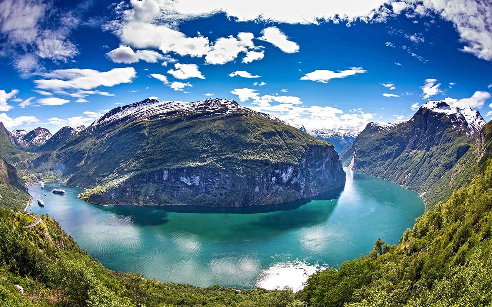
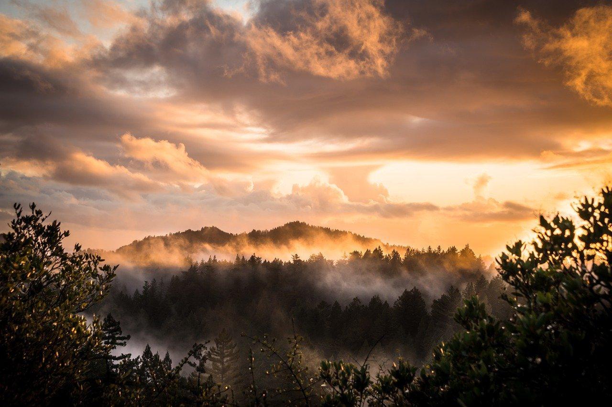

Kriterien für die Eigenständigkeit
Was bei einem Berg als „hoch“ angesehen wird, ist stets relativ zur umgebenden Landschaft. So würden die norddeutschen Dammer (115 bis 146 Meter) oder Hüttener Berge (92 bis 106 Meter) in der Schweiz nur als Hügel gelten, wofür man in Deutschland oder auch in Österreich die Grenze bei etwa 300 Meter ansetzt. Der Møllehøj als höchster Berg Dänemarks misst gerade einmal 170 Meter, und der Wilseder Berg überragt mit 169 m ü. NN nicht nur die Lüneburger Heide, sondern sämtliche natürlichen Erhebungen im Umkreis von 100 Kilometern.
Die Schartenhöhe und die Dominanz einer Erhebung können als Kriterien herangezogen werden, um einen Gipfel als selbstständigen Berg zu klassifizieren. Im Hochgebirge gilt beispielsweise eine Schartenhöhe von 100 Metern und eine Dominanz von etwa ein bis drei Kilometer als Mindestmaß, um von einem eigenständigen Berg zu sprechen.



×